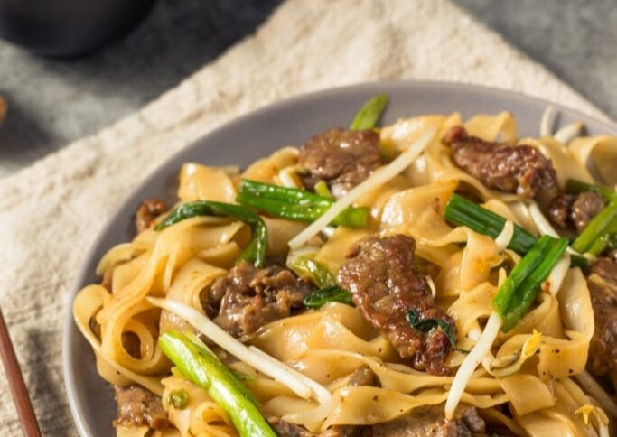

Jika bihun bentuknya kecil dan panjang, kwetiau memiliki bentuk lebar dan pipih. Sama-sama berbahan dasar beras, Atekstur kwetiau jauh lebih kenyal dibanding bihun. Kwetiau juga bisa diolah menjadi aneka sajian one dish meal yang menggugah selera. Salah satunya adalah kwetiau goreng sapi.
Ingredients
- Kwetiau - 1 bungkus (300 gram)
- Daging sapi, iris tipis - 50 gram
- Bawang putih - 4 siung
- Garam - 1/2 sdt
- Merica bubuk - 1/3 sdt
- Air - 70ml
- Kaldu sapi bubuk - 1/2 sdt
- Telur - 2 butir
- Sawi - secukupnya
- Tauge - secukupnya
Langkah-Langkah:
- Panaskan minyak goreng di wajan, tumis bawang putih hingga harum, lalu masukkan daging sapi dan tumis lagi hingga daging matang lalu pinggirkan.
- Masukkan telur, orek-orek.
- Masukkan sawi dan tambahkan air
- Beri garam, merica, penyedap, kecap manis
- Sesudah mendidih, masukkan kwetiau dan tauge. Aduk hingga tercampur rata.
\
- Angkat dan sajikan.